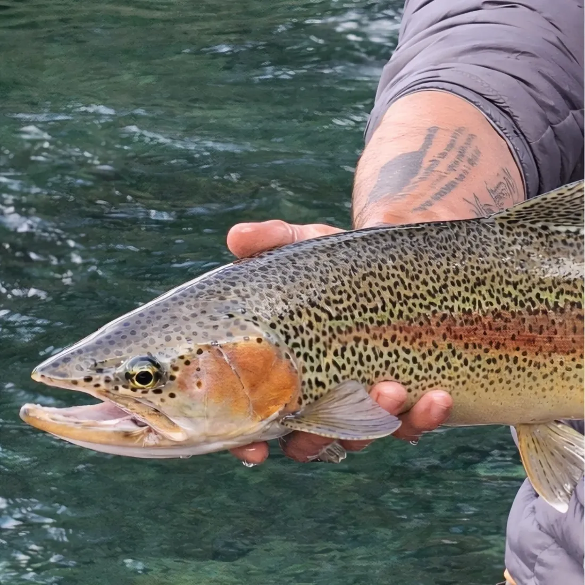
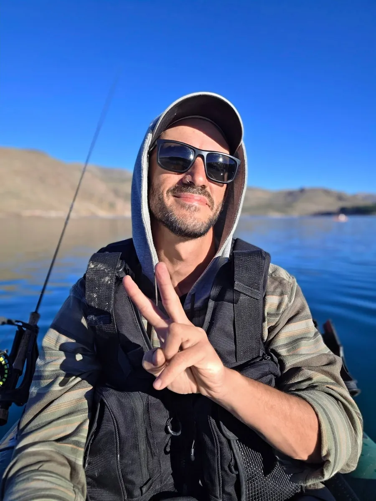
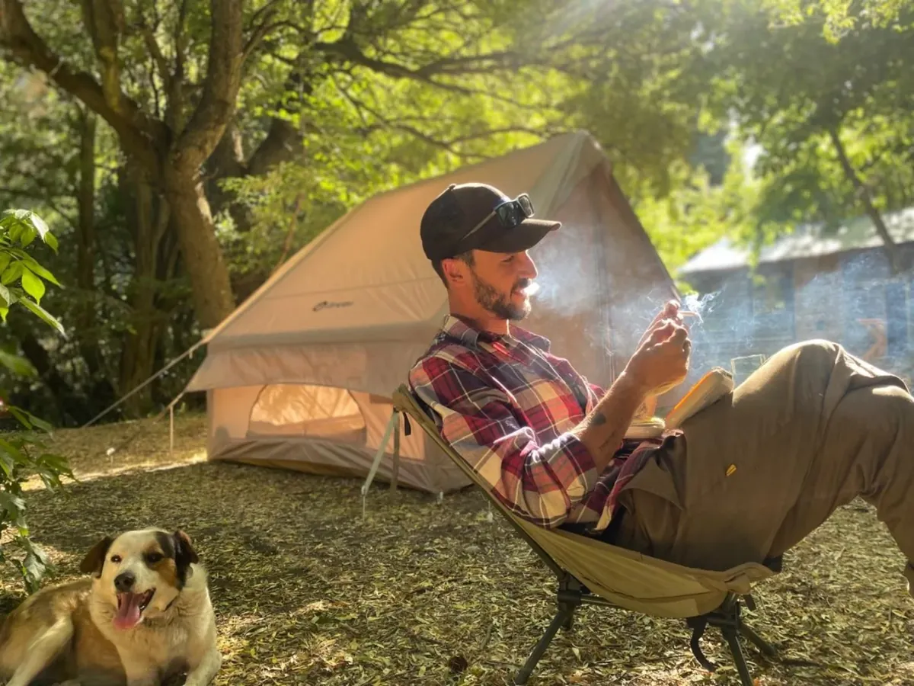
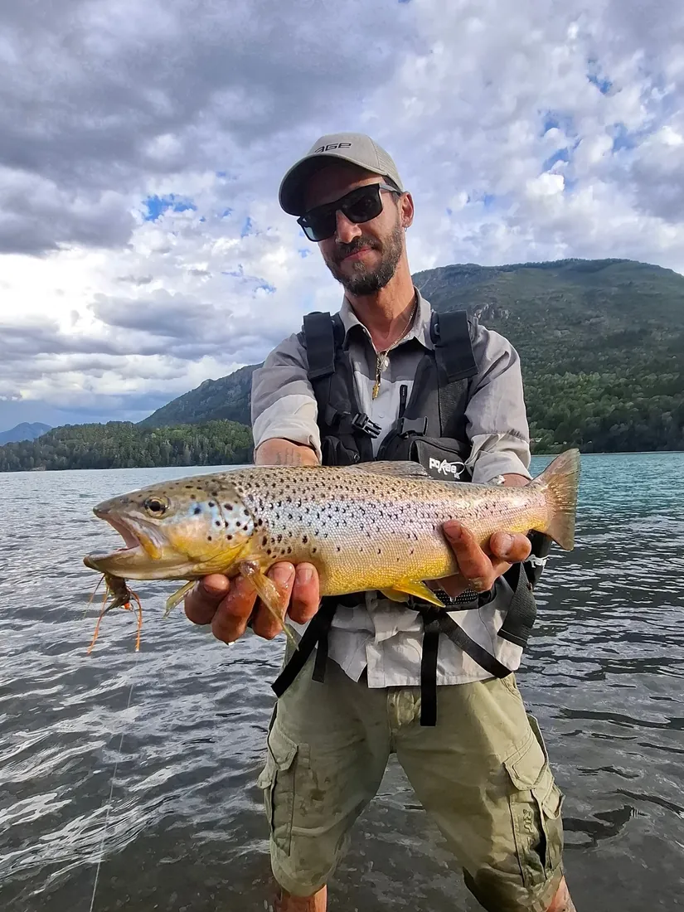
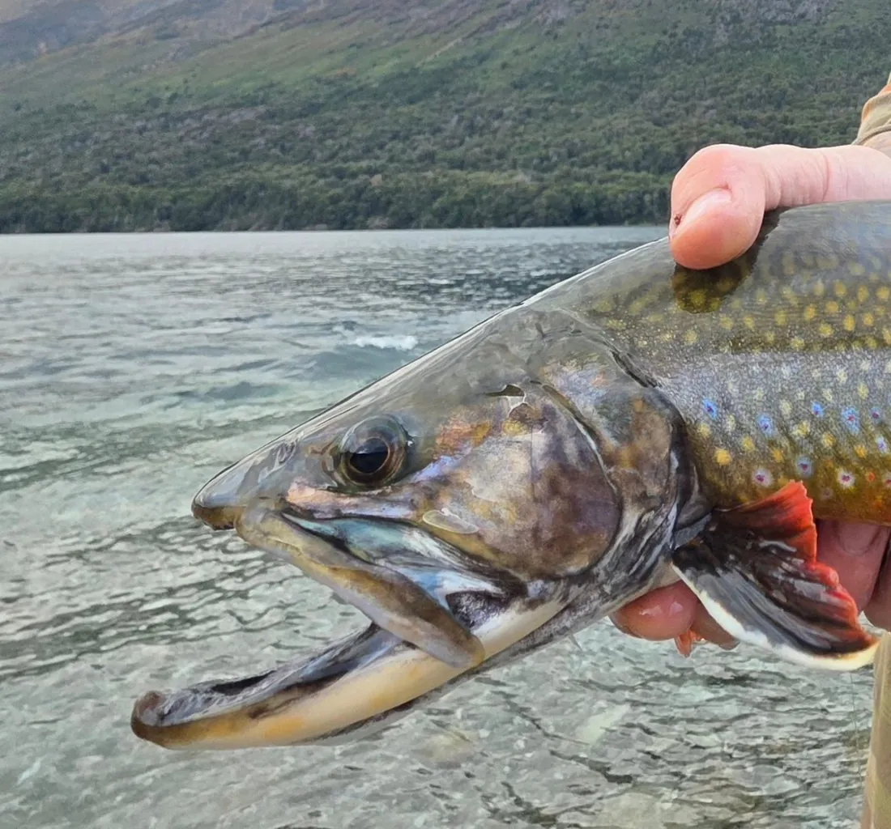
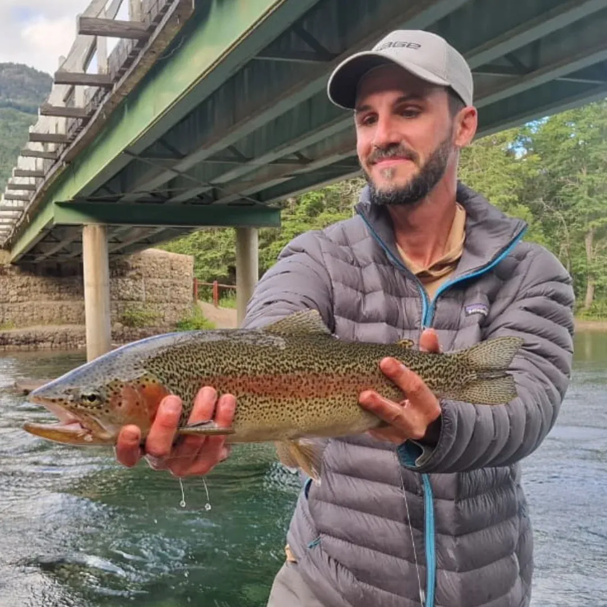
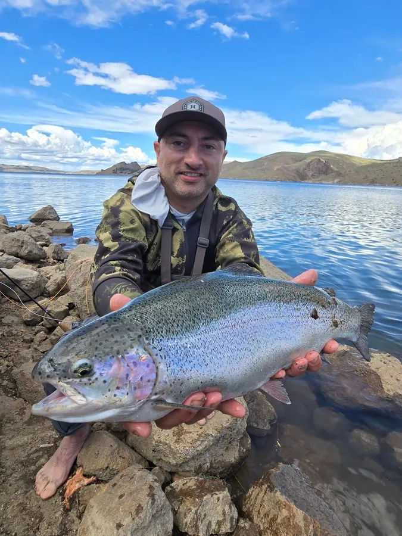
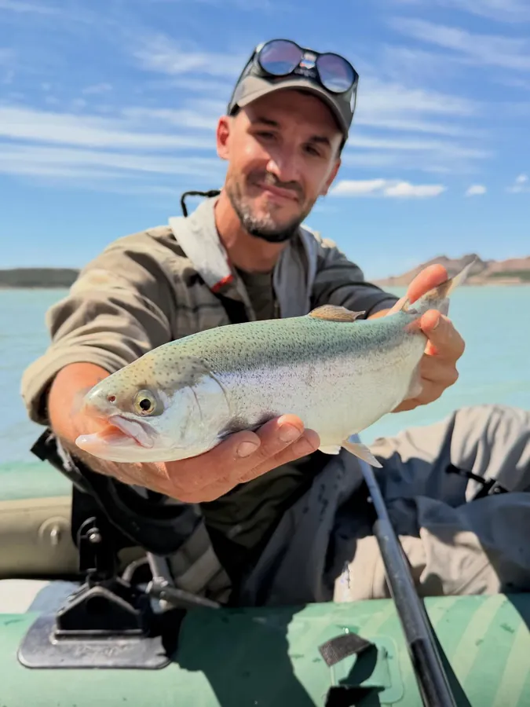
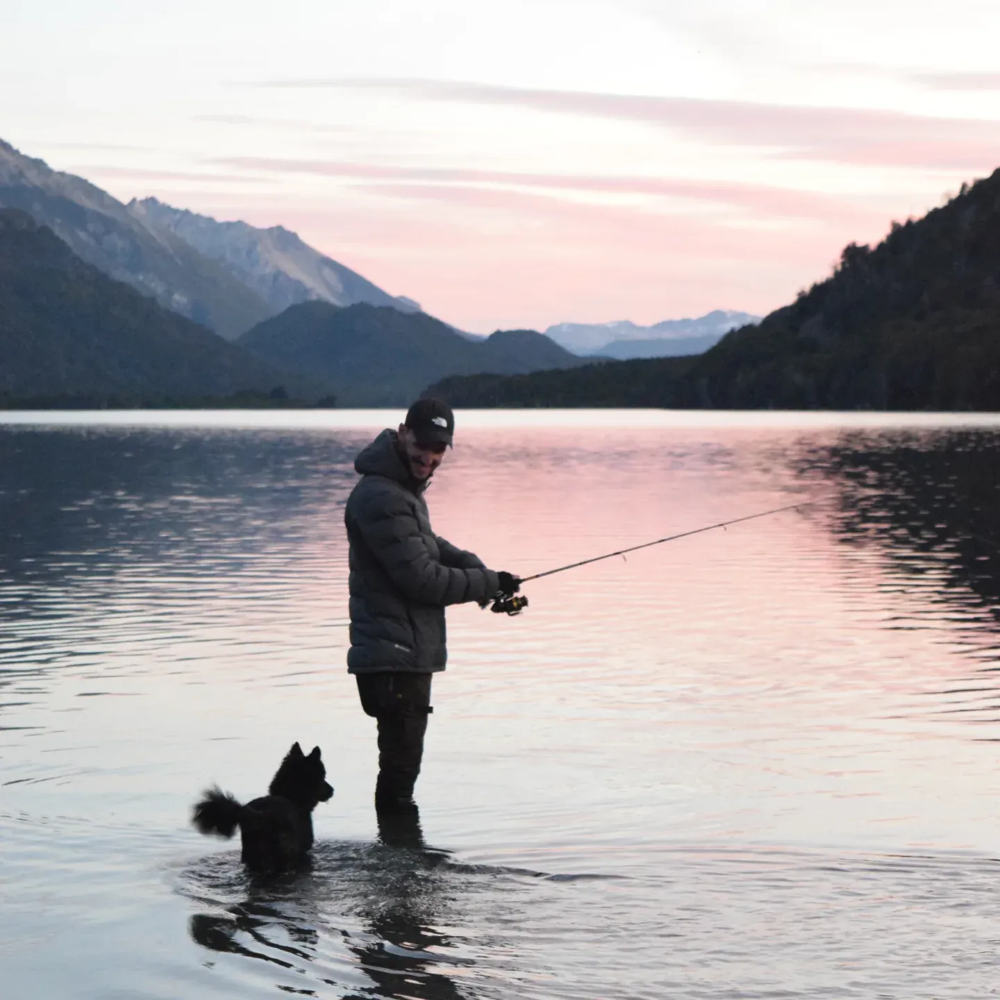

Trucha Arcoíris
Oncorhynchus mykiss
La primera, la de siempre. Plateada, inteligente y peleadora: una pesca que exige leer el agua y no perdona el apuro.
- Dónde
- Nahuel Huapi · Alicurá
- Cómo
- Ninfa e indicador de pique
41°08′ S — 71°18′ O · Patagonia Argentina
Soy Emiliano, pescador argentino y de La Patagonia. Pesco, filmo y enseño a pescar en los lagos y ríos de Bariloche.


El pescador
Detrás de @pesca.andina.bariloche hay un pescador que creció leyendo el agua: Emiliano Santiago. Con mosca o con spinning, de orilla, vadeando o desde el kayak, recorre los lagos y ríos que rodean Bariloche registrando cada jornada — las truchas, las lengas rojas del otoño, el fuego del campamento y los perros que siempre lo acompañan.
Su cuenta es a la vez bitácora y escuela: tutoriales para dar los primeros pasos, técnicas para quienes ya pescan y el paisaje patagónico como telón de fondo de todo.
“Cuidemos los ríos, los lagos, las playas. Nosotros los pescadores, más que nadie, deberíamos cuidar el recurso y los espacios.”
— Emiliano, desde el agua
Temporada de pesca continental · Patagonia
■ temporada abierta · ■ otoño, los grandes salen a la superficie · cierra el 1 de mayo — el embalse se pesca todo el año
Guía de especies

Oncorhynchus mykiss
La primera, la de siempre. Plateada, inteligente y peleadora: una pesca que exige leer el agua y no perdona el apuro.

Salmo trutta
El oro del Manso. Desconfiada y territorial, espera el bocado justo. Cuando toma el streamer, no hay dudas: es ella.

Salvelinus fontinalis
El fuego del otoño patagónico. Cuando las lengas se ponen rojas, las fonti se acercan a los arroyos vestidas de naranja.

Modalidad
No hace falta irse lejos: puentes, costaneras y desembocaduras a minutos de la ciudad también guardan truchas. La pesca empieza donde estés.
Serie · Aprendé a pescar en Bariloche
En sus videos, Emiliano explica desde cero las técnicas que usa todas las semanas en los lagos de Bariloche. Sin vueltas, con el equipo justo y en los mismos spots donde después vas a pescar.
La técnica más simple para arrancar: la mosca deriva hasta que la boya se hunde. Ahí, tirón y pez enganchado.
La carta ganadora para las arcoíris del embalse, en cualquier época del año.
Para buscar a las marrones y a los peces grandes que comen abajo.
Parte 1 · embalse de Alicurá
Aguas que pesca
Desde el agua

“Excelente guía de pesca y aventura. Gracias por hacerme pescar mi primera trucha.”
— Pescador invitado, embalse Alicurá

“Me traje un amigo y gran persona de la Patagonia: un guía con todas las letras y con mucho conocimiento. Prometo volver.”
— Visitante, arcoíris de Bariloche
Bitácora visual

El anzuelo está tirado
Escribile por Instagram para coordinar una salida, preguntarle por técnicas y equipos, o simplemente seguir sus aventuras por la Patagonia.